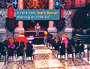
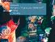

|
After
the group's initial visit to Treno, return to the King's Mansion
and the auction. Some Key Items and some extremely useful equipment
are auctioned off here, and this auction is the key to receiving
a very powerful weapon!
Upon
entering, the auctioneer lists off the items up for bid. To purchase
an item, approach the stage until you see a "?" over Zidane's head.
Nobles in the audience will bid, and they have a lot of Gil to throw
away. Whenever you want to bid, press the X button and a menu appears.
The menu automatically inserts a bid 100 Gil higher than the last,
but you can raise or lower your bid as you see fit.
| Rare
and Key Items that you can bid on at the auction include the
following: Mini-Cid, Griffin's Heart, Doga's Artifact, Une's
Mirror, the Magical Fingertip, and the Rat Tail. (Some FINAL
FANTASY veterans may remember some of these items from previous
FINAL FANTASY titles.) These items have some strange uses, plus
you can resell them.. |
 |
The
trick to the auction is to avoid getting into a bidding war. If
you attempt to outbid the nobles at every turn, they will toss out
fake bids just because they know you'll outbid them. The smartest
thing to do is let the nobles bid amongst themselves for a while.
Then, when it seems like the auctioneer is ready to sell the item,
throw in a last-minute bid just slightly higher than the last. This
should get you the item you want at a reasonable price every time.
If you allow the nobles to jack up the prices, then you lose out
on profiting from the resale value. Check the resale value of these
items in the next section before paying too much for an item.
If
you leave the auction before a Key Item is sold, then it will be
available the next time you enter the auction.
Street Value of Auction Items
| After
purchasing certain Key Items from the lavish Treno Auction,
talk to people in the area around the Café Carta. Some
nobles will see that you have items they desire, and will offer
Gil for them. But don't settle for the first offer! Turn down
the first amount to get them to increase their offer.
|
 |
Two
notes here: You must sell the Griffin's Heart to the Adventurer before
that person becomes interested in the Rat Tail. Also, the Scholar
in Treno's Synthesis Shop will not top his offer of 10000 Gil.
Expected
Resale Prices in Treno Streets
 SPECIAL
ITEMS SPECIAL
ITEMS
KEYWORD: TRNO5 |
| Item
|
Noble
|
1st
offer |
2nd
offer |
|
Une's Mirror |
Nobleman by Café |
12000 Gil |
15000 Gil |
|
Doga's Artifact |
Scholar in Synth shop |
10000 Gil |
N/A |
|
Griffin's Heart |
Adventurer by Café |
8000 Gil |
10000 Gil |
|
Rat Tail |
Adventurer by Cafe |
20000 Gil |
25000 Gil |
|
){kind=link}
){kind=link}